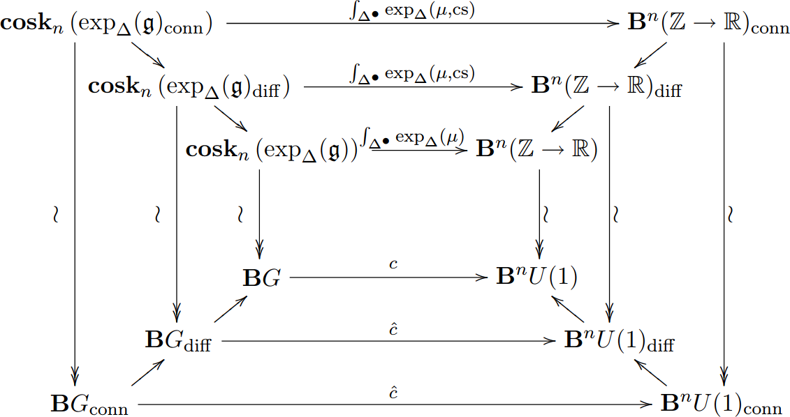

This seminar is an informal, discussion-style seminar for students in mathematical physics.
Any and all are welcome to speak and/or come and discuss.
You can even request a topic you'd like someone to talk about here.
schedule: MWF 3 - 4pm @ Lunt 102
October 25, 2017 — Nilay — differential characters
Differential cohomology is a geometric refinement of ordinary cohomology that
naturally lives in the smooth category. The Chern-Weil homomorphism, for instance,
factors naturally through differential cohomology, yielding differential refinements
of topological characteristic classes. Moreover one finds that (higher) circle bundles
with connection are classified by differential cohomology. I will outline
the original model of differential characters, as constructed by Cheeger and Simons,
and work through some basic properties.
October 27, 2017 — Sean — the variational bicomplex
We will introduce jet bundles and work through some basic properties. They will
give us useful tools for thinking about local functionals, which are tricky
to work with.
We will discuss the small-time asymptotics of the heat kernel of the laplacian
(on functions) on a compact oriented manifold. In particular, we will explore
the general form of the coefficients appearing in this expansion.
November 6, 2017 — Nilay — characteristic forms and simplicial sheaves I
Chern-Weil allows us to construct concrete differential form representatives of characteristic
classes, sometimes called characteristic forms. Freed and Hopkins ask the question:
are the Chern-Weil characteristic forms the only characteristic forms?
We will follow their precise formulation of this question in terms of simplicial sheaves
(necessary due to the presence of principal bundle automorphisms) and
sketch their (affirmative) answer.
November 8, 2017 — Nilay — characteristic forms and simplicial sheaves II
We will use the setup of simplicial presheaves discussed last time to prove that
the de Rham complex of \(E_\nabla G\) is precisely the Weil algebra
\((\text{Kos}^\bullet \mathfrak{g}^*, d_K)\). We will take for granted some results
from invariant/representation theory as well as a bit of model category theory.
November 10, 2017 — Pax — the Witt and Virasoro algebras
We will discuss the basics of the Witt and Virasoro algebras.
References:
Francesco, Mathieu, Senechal — Conformal field theory
November 13, 2017 — Sean — particle mechanics on jet space
After finishing up the discussion last time on the variational bicomplex,
we will study the simplest physical system, the free particle, using this formalism.
November 17, 2017 — Sean — variational approach to bv I
I'll start by recalling the geometric building blocks for classical BV in the case of zero-dimensional field theory.
Then I will say how these can be generalized to positive dimensions by building on the variational techniques introduced previously.
The classical Weyl law is a theorem about the growth of eigenvalues of an elliptic operator.
In this talk I'll specialize to the Laplacian and present Hormander's proof of a suped up version called the local Weyl law,
the spiciest ingredient in the proof of quantum ergodicity. [qual practice talk hosted by the
analysis seminar]
References:
November 27, 2017 — Sean — variational approach to bv II
—
References:
January 10, 2018 — Nilay — smooth Deligne cohomology
We will introduce smooth Deligne cohomology as a model for differential cohomology.
We will compute these groups explicitly in low degrees with an eye towards gerbes
as well as outline the multiplicative structure. As natural examples of degree one
and two classes we will sketch the construction of the eta invariant and the determinant
line bundle associated to families of Dirac operators in odd and even dimensions, respectively.
References:
Brylinski — Loop spaces, characteristic classes, and geometric quantization
January 12, 2018 — Pax — modular tensor categories
Fusion, modular, and unitary modular tensor categories have played an increasingly large role
in modeling exotic symmetries in physics. In fact, it is widely believed that unitary modular
tensor categories (with an additional rational number parameter \(c\)) are in one to one
corrospondence with topological phases of matter. In this talk, we aim to define such objects
and discuss basic examples and properties of such categories, with an eye toward exploring
physical applications in the future.
References:
January 17, 2018 — Nilay — more Deligne cohomology
Last time we rushed the definition of the multiplicative structure on Deligne cohomology
so we will review the definition as well as motivate its seemingly-asymmetric construction
and sketch its homotopy coherence. We will then move to the definition of a bundle gerbe and
give some examples arising from geometry.
January 22, 2018 — Pax — review of Gaussian processes
We review the basics of random variables and Gaussian processes with an eye
towards spin glasses, which we will discuss next time.
References:
January 24, 2018 — Pax — spin glasses
TBA
References:
January 26, 2018 — Nilay — introduction to operads
Our discussions from last week on homotopy coherence and multiplications
on the singular and Deligne complexes motivated me to learn a bit of
formalism to make some of our statements precise. We will cover the very
basics of operads: definitions and most importantly, simple examples.
We will sketch an \(A_\infty\)-structure on the based loop space \(\Omega X\)
and an \(E_\infty\)-structure on (normalized) singular cochains.
References:
Fresse — Homotopy of operads and Grothendieck-Teichmuller groups
February 7, 2018 — Sean — bv: the spinning particle I
TBA
References:
February 12, 2018 — Sean — bv: the spinning particle II
TBA
References:
February 21, 2018 — Sean — bv: the spinning particle III
TBA
References:
February 25, 2018 — Nilay — differential forms and Hochschild homology
We'll discuss how the Hochschild complex of the dga of differential forms \(\Omega^*X\)
is quasi-isomorphic to \(\Omega^*\text{Maps}(S^1, X)\) if \(X\) is simply-connected.
We'll sketch how one might extend this to compact manifolds that are not the circle
and how this relates to higher Hochschild homology or factorization homology.
March 12, 2018 — Nilay — integration as an \(A_\infty\)-morphism
We'll follow Gugenheim's 1976 paper that shows that the integration map
\(\Omega^*X \to C^*(X,\mathbb{R})\), which is not a map of algebras, can be
extended to an \(A_\infty\)-morphism.
March 14, 2018 — Piotr — homology theories and Hopf algebroids
If \(E\) is a reasonable homology theory, then \(E_{*}E\) acquires a structure of a so-called Hopf algebroid,
and for any spectrum \(X\), the homology \(E_{*}X\) is canonically a comodule over \(E_{*}E\). We will
discuss how this basic algebraic invariant is the lens through which we understand stable homotopy theory.